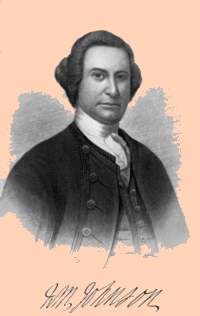

|
by Stefan Bielinski 
Although he owned an impressive house and other property along the Albany waterfront, Sir William Johnson (1715-1774), rarely if ever spent more than a night in the colonial city. However, from the 1740s until his death in 1774, he was a pivotal figure in early Albany history. Frontier developer, businessman, Indian diplomat, military leader, Masonic enthusiast, and all-around British official, William Johnson was one of the most important people in colonial New York. His life in America has been the subject of several biographies and other historical treatments. The multi-volume edition of his papers provides an important and unparalleled window on Albany's diverse functions during the middle of the eighteenth century. At the same time, Johnson was intimately involved with the Albany business community, in Indian diplomacy - which frequently brought him into conflict with the Albany Indian commissioners, and in the Albany Masonic Lodge where he sincerely cared about the lives of its diverse members. From the time of the last colonial war, William Johnson was clearly visible as the leading royalist living in greater Albany County. Those with pro-British sympathies and loyalties revolved around this important personage. His unexpected death following a stroke in the summer of 1774 left Albany loyalists without an advocate and in complete disarray. The story of the Revolutionary movement in the upriver region may have been markedly different had he lived. Johnson's many-faceted and legendary life is much better explained in the sources cited below. In the future, this page will better explain William Johnson in his early Albany context! Detail from a portrait of William Johnson by John Wollaston, Jr. painted about 1751. In the collection of the Albany Institute of History and Art - the repository of a number of Sir William-related items. Other likenesses of Johnson are known to exist! Johnson's Albany house stood on the east side of Market Street and on the north side of State Street. He purchased that property from Henry Holland during the winter of 1748-49. Johnson called it "one of the best houses in Albany." An undated notice (but probably of 1748-49 vintage) described a two-story, brick building with good cellars, kitchen, and bleach yard. It was valued at 1,500 pounds. Also included on the property was a water lot with a frame house - valued at 500 pounds.The In 1759, Johnson purchased an adjacent lot from the city of Albany. Johnson's Albany property was left to his son-in-law, Daniel Claus. The life of Sir William Johnson is CAP biography number 8489. With many Albany contacts, he was a keen and long-time observer of the Albany scene. The multi-volume edition of his papers represents a major resource for early Albany history. The most comprehensive printed biographical study of Johnson is Milton W. Hamilton, Sir William Johnson: Colonial American, 1715-1763 (Port Washington, NY: 1976). Milton Hamilton also was the last editor of the Johnson Papers. Not to be missed is The Firekeeper: A Narrative of the New York Frontier By Robert Moss, published in 1995. The most modern treatment concerning Johnson can be found in Timothy J. Shannon, Indians and Colonists at the Crossroads of Empire: The Albany Congress of 1754 (Ithaca: Cornell University Press, 2000). Online resources abound beginning with Wikipedia from where the engraving of the frequently reproduced Mc Ilworth portrait has been taken. Johnson's will: is reproduced online. first posted: 11/00; last revised 10/31/10 |